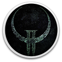

 Quake II (Original)
Details
 |
|
| Playtime | Not Played |
| Last Activity | Never |
| Added | 20/12/2024 16:41:22 |
| Modified | 18/05/2025 1:55:05 |
| Completion Status | Not Played |
| Library | Gog |
| Source | GOG |
| Platform | PC (Windows) |
| Release Date | 09/01/1998 |
| Community Score | 93 |
| Critic Score | |
| User Score | |
| Genre | Shooter |
| Developer | id Software MachineGames Nightdive Studios |
| Publisher | Bethesda Softworks |
| Feature | Co-Operative Multiplayer Single Player |
| Links | GOG Wikia |
| Tag | 1990's Action Arena Shooter Atmospheric Boomer Shooter Classic Co-op Fast-Paced First-Person FPS Gore Great Soundtrack Horror Moddable Multiplayer Old School Retro Sci-fi Shooter Singleplayer |
Description
It's the final culmination... bound and bagged exclusively for you. A quadrisection of explosive gaming that's a true embodiment of the game that annihilates the rest. Quad Damage compiles original Quake II, The Reckoning, Ground Zero, and Extremities all into one solid mass. Perfect for power killing, this lethal gathering levels you with mind-bending AI, merciless monsters, and an arsenal of weaponry. consider this your four-warning.
 Quake II
Quake II
Much more than just a sequel, this second coming has a mind (and an engine) of its own. Fifty-five larger mission-based levels, including 64-player DeathMatch and Capture the Flag levels. Futuristic weapons like the revered Railgun and BFG put every foe in its place, as do hordes of other comebacks including the grenade launch, chaingun and the Hyper Blaster from hell. And with enemies like the decapitating Iron Maiden and humanoid Tank, you're going to need all the help (and health) you can get.
 Mission Pack: The Reckoning
Mission Pack: The Reckoning
developed by Xatrix Entertainment Inc.
A sum total of horror equal to no other. Shadow-looming Gekks and Strogg-rousing Repair bots await you as you ransack the industrial landscapes of 18 relentless levels. Your only recourse is to use your inner strength and outer hardward: the richoting Ion Ripper, magnesium-shooting Phalanx Particle Cannon and your very own recycling bim, the Trap. Settling the score was never more gratifying.
 Mission Pack: Ground Zero
Mission Pack: Ground Zero
developed by Rogue Entertainment
It's a massacre in the making. A stranglehold of 14 Single-Player levels and 10 Deathmatch levels designed to challenge even the most well-grounded gamer. Complete with a slew of weapons, including the ETF Rifle and Plasma Beam, plus DeathMatch-specific power-ups like the Vengeance Sphere and the Anti-Matter Bomb. And Lest we forget your worst enemies: the Stalker, Daedalus and the femme fatale herself, the Black Widow.
 Netpack I: Extremities
Netpack I: Extremities
compiled by id Software
Deflowered from the Quake community and brought directly to you comes ID's top picks of the best of the best MODs around. It's the ultimate anthology made by the fans for the fans, including everything from Team DeathMatch games with new power-ups, objectives, and skins, to new styles and scoring system for DeathMatch play.
Quake II
Much more than just a sequel, this second coming has a mind (and an engine) of its own. Fifty-five larger mission-based levels, including 64-player DeathMatch and Capture the Flag levels. Futuristic weapons like the revered Railgun and BFG put every foe in its place, as do hordes of other comebacks including the grenade launch, chaingun and the Hyper Blaster from hell. And with enemies like the decapitating Iron Maiden and humanoid Tank, you're going to need all the help (and health) you can get.
Mission Pack: The Reckoning
developed by Xatrix Entertainment Inc.
A sum total of horror equal to no other. Shadow-looming Gekks and Strogg-rousing Repair bots await you as you ransack the industrial landscapes of 18 relentless levels. Your only recourse is to use your inner strength and outer hardward: the richoting Ion Ripper, magnesium-shooting Phalanx Particle Cannon and your very own recycling bim, the Trap. Settling the score was never more gratifying.
Mission Pack: Ground Zero
developed by Rogue Entertainment
It's a massacre in the making. A stranglehold of 14 Single-Player levels and 10 Deathmatch levels designed to challenge even the most well-grounded gamer. Complete with a slew of weapons, including the ETF Rifle and Plasma Beam, plus DeathMatch-specific power-ups like the Vengeance Sphere and the Anti-Matter Bomb. And Lest we forget your worst enemies: the Stalker, Daedalus and the femme fatale herself, the Black Widow.
Netpack I: Extremities
compiled by id Software
Deflowered from the Quake community and brought directly to you comes ID's top picks of the best of the best MODs around. It's the ultimate anthology made by the fans for the fans, including everything from Team DeathMatch games with new power-ups, objectives, and skins, to new styles and scoring system for DeathMatch play.